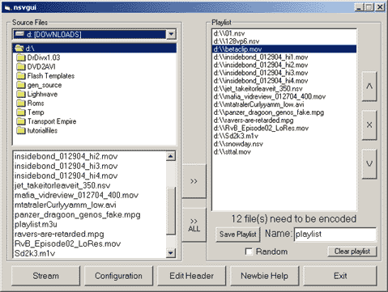

Selecting Videos
Now that we have our config and header set up, we can now get to making our stream.

1.) On the Source Files side of the window, select the drive and folder containing a file you want to add.
2.) Select it in the list and press >> to add it. You can also use the >> ALL to import that entire folder into the playlist. (NOTE: If you import nsv files, they must be encoded with the same settings or stream won't work correctly. If you import both nsv and other formats, you probably would be better off enabling custom profiles and selecting the same settings that the nsvs were encoded with)
3.) Make final adjustments to the playlist. This is done by selecting an entry and using the arrows on the side to move it around. X will remove a file from the list. If you don't like the list at all, you can use the Clear Playlist button at the bottom to erase it. You can check the Random option if you want to add some variety. (NOTE: Checking random won't show any difference in the playlist at this time, but the stream will play randomly)
Optional) You can enter a name for the playlist and click the Save Playlist button if you'd like to use this playlist in the future. It will create a m3u in the folder that is selected to the left. This playlist can also be played back in Winamp.
4.) Hit stream to start the streaming process. The program will start a DOS window, which may be minimized. In this DOS window, you can check on encoding and other steps. When it says "Opening file 'xxx/playlist.nsv' ...Success," that means it is finally streaming.
Optional) After you create the playlist, you can create an addition to it by going through the same steps again.
Success! You're streaming!
Go
back to index